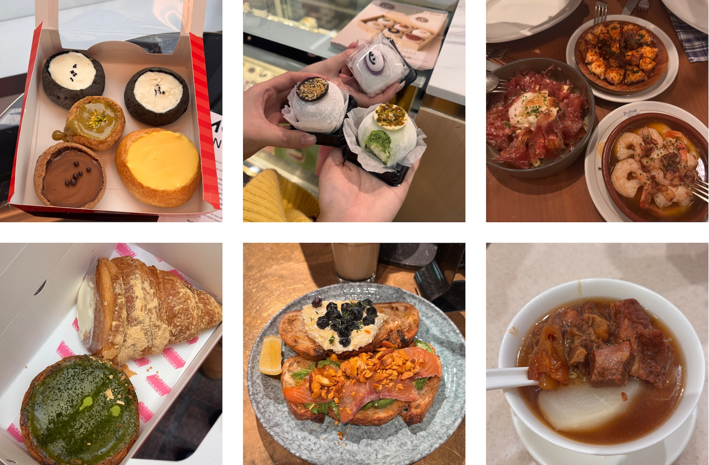

Specialty Coffee
FINEPRINT
Try: Ricotta toast and salmon toast. You can order one slice for each!
See Maps →
Try: Ricotta toast and salmon toast. You can order one slice for each!
See Maps →Try: The matcha tart is really a good balance between sweet and bitter.
See Maps →Try: French toast and beef noodle
See Maps →Try: Single Origin Pour-Over
See Maps →Try: Seasonal Gelato Flavors
See Maps →Try: Crème brûlée egg tart
See Maps →Try: Wonton Noodle Soup
See Maps →Try: Seasonal Omakase Kaiseki
See Maps →Try: Seafood paella
See Maps →Try: Matcha pistachio mochi
See Maps →